One game day lasts 24 minutes
A market town on floating islands
Genesis Town is a pixel-art life sim in your browser. Fish, chop wood and grow wheat on your own islands, then sell to 4 merchants whose prices move with their stock. Free, on NEAR testnet.
A Homeland of nine floating islands above the town. One for every player.
Open an island and a plank bridge crosses the gap. Tap a marker on the picture to see what each part is for.
Four merchants on the market square. Pick one to see their shelf.
Lapak Ikan Sari
| Good | Stock / target | Buy | Sell |
|---|---|---|---|
| Fish | 20/20 | 9 | 7 |
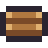 Wood | 10/10 | – | 5 |
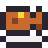 Grilled fish | 8/8 | 22 | – |
Market prices for seven goods. Craft them up for more.
Base prices from the game's economy file.
- Fish
Sari sells it. Sari and Joko buy it.
8 coinbase - Wood
Joko sells it. All four buy it.
6 coinbase 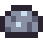
OreNeeds a tool to mine. Budi buys it.
12 coinbase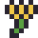
WheatWati sells it. Wati and Joko buy it.
5 coinbase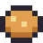
BreadTwo wheat. Wati and Joko sell it.
16 coinbase- Grilled fish
One fish and one wood. Sari sells it.
20 coinbase 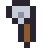
ToolTwo ore and one wood. Budi sells it.
45 coinbase
Recipe value at the market
- 1 × Fish8
- 1 × Wood6
- Grilled fish20
Added by one craft+6 coin
At base prices; the crafting fee is taken off.
Three jobs that fill your bag. All of it sells at the market.
Fish for Sari's stall
Cast from the shore. Sell fish raw to Sari or Joko, or grill it over one piece of wood.
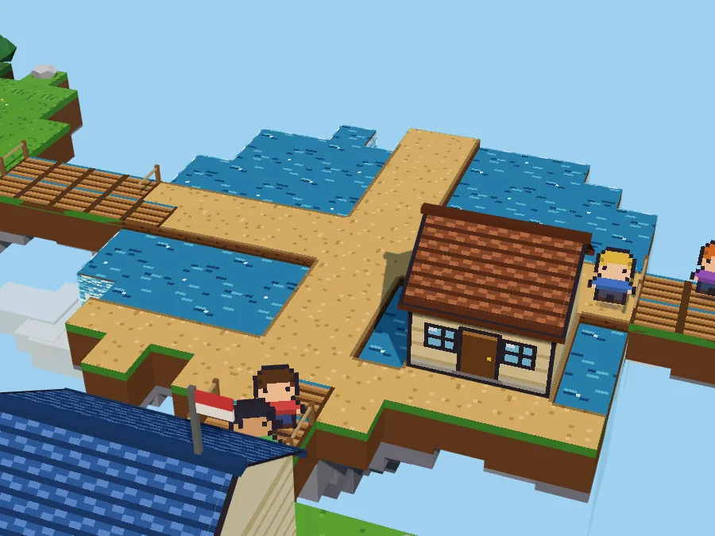
Mine 2 ore and chop wood for a tool
Forests ring the islands and the mine is in the north. Budi buys both.
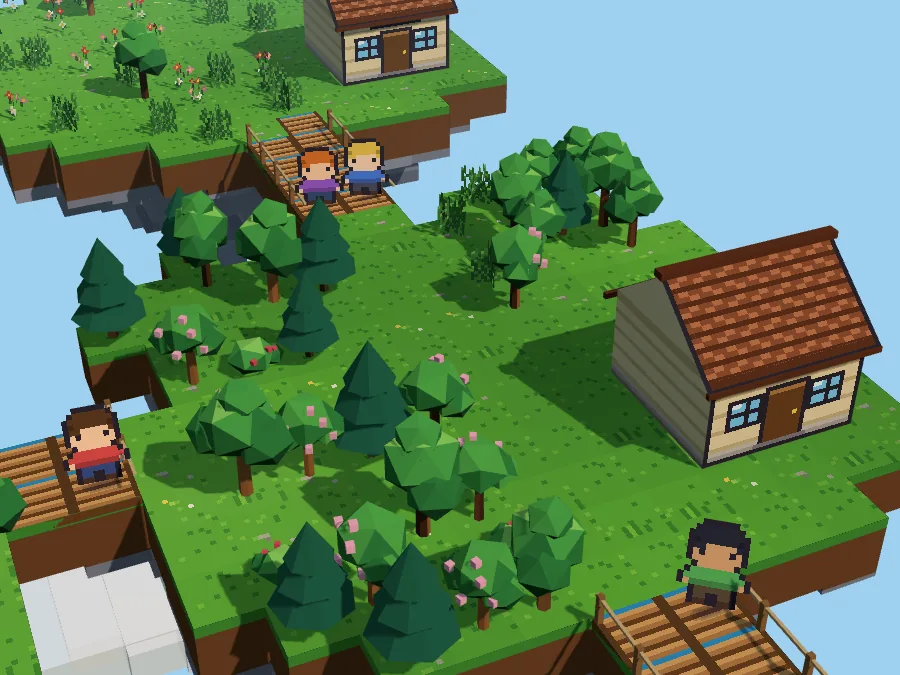
Grow wheat in 3 days
Plant it on your farm, water it daily, then harvest. Two wheat bake one loaf.
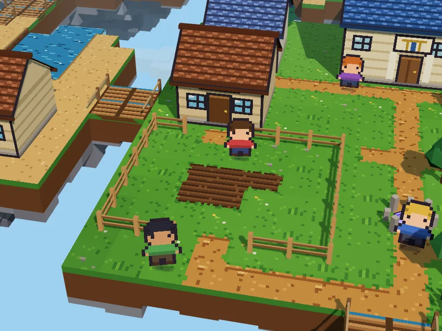
One game day in 24 real minutes. The same clock for every player.
A game hour lasts one real minute. The server keeps the clock, so night falls on every island at once.
- Settlement on NEAR
The day's trades are added up and written to the contract with the ledger's Merkle root.
06:00 - Daylight
Fish, chop, mine and farm, then sell what you made in the town.
06:00 to 19:00
- Concert on the square
A band plays the town's chiptune on the stage by the fountain.
19:00 to 01:00 - Boars and bats
They roam the open forest and rock islands, and drop wood and ore when you beat them.
19:00 to 06:00
Four seasons, the same for every player. Seven game days each.
- Spring
Blossom on the fruit trees, green fields.
7 days - Summer
Bright water and the brightest grass.
7 days - Autumn
Orange crowns and amber evening light.
7 days - Winter
Snow on the ground, bare oaks, no wheat grows.
7 days
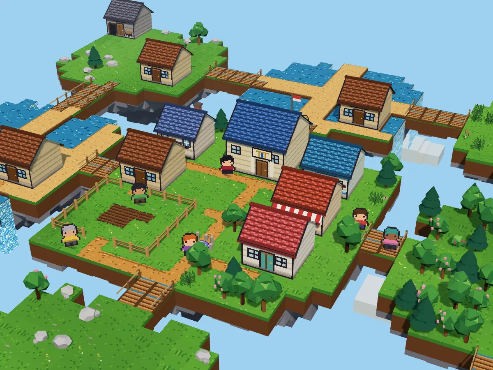
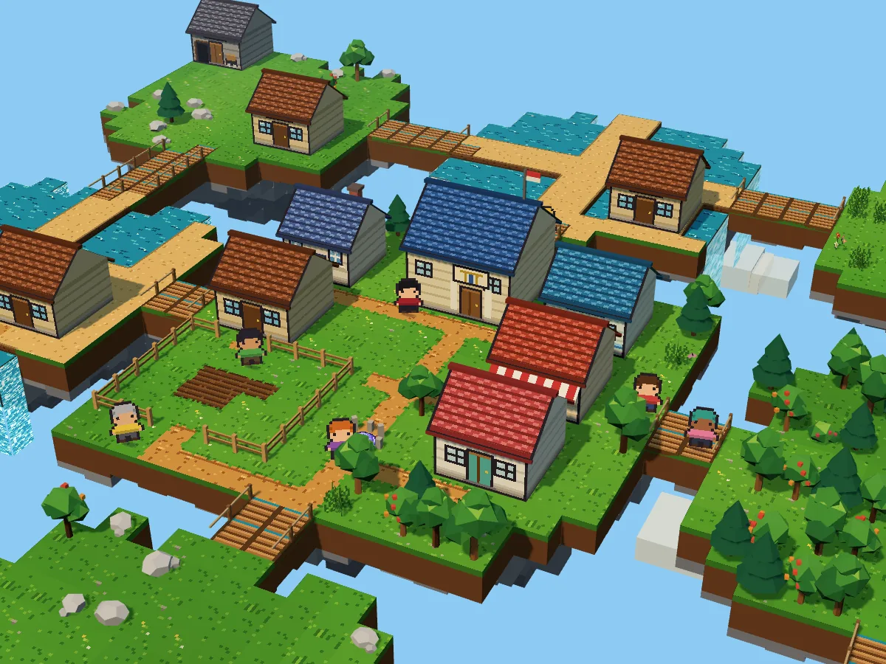
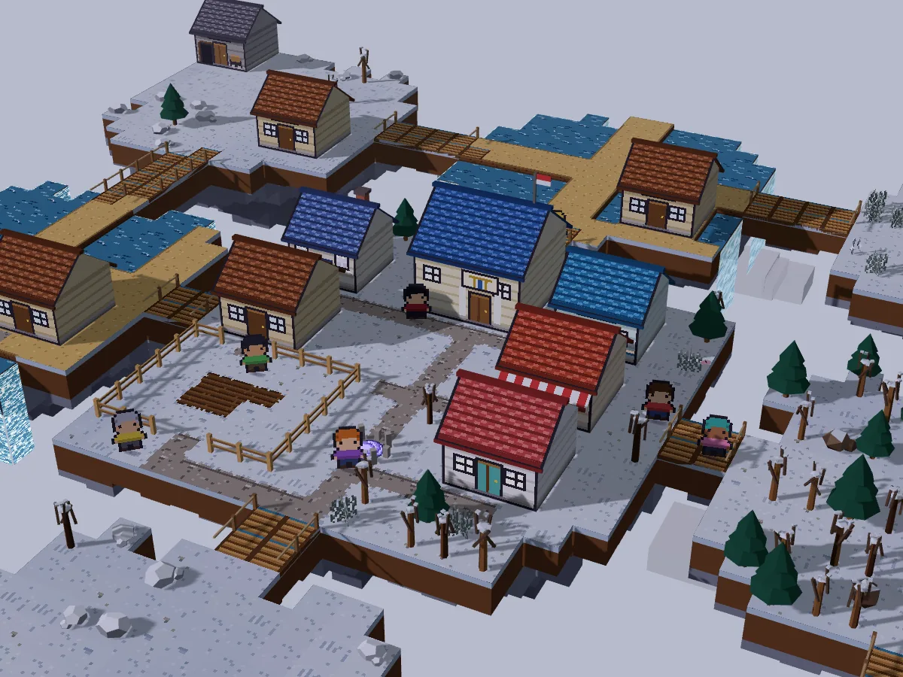
Questions about Genesis Town
What does the sim cost?
Nothing. The game is free and runs on NEAR testnet, where coin and items have no cash value.
How do I sign in to the town?
With Google or email, no wallet. Your browser keeps a key that can only call the game's contract, and the game pays the gas.
Which browser can I play in?
Any current one, on a computer or a phone. A computer draws the 2.5D view and a phone draws 2D. The menus are in Indonesian.
Which market goods go on NEAR?
Your items and coin, as tokens in one contract. Gathering, crafting and merchant trades are written once a game day; Pasar listings and gifts at once.
Can I trade with players outside the market?
Yes. Hand goods to a player within 3 tiles in the town, list them on the Pasar (5% of each sale is burned), or use the consignment stall.
Can friends visit my Homeland?
Invite them by name and tag. Guests walk your islands and chat with you; only you build there.
Market goods on NEAR
Your items and coin are tokens in one NEAR contract, written once a day at 06:00 game time. Sign in with Google or email: no seed phrase, no wallet pop-up and no gas while you play.
Read the code on GitHub